原來，拆禮物的kimochi這麼好！！玩具爛了真的可以丟了，省個屁？
卡卡又要去阿嬤家安親一週了，我媽人現在開心的不得了
剛打去交待事情，她還說她禮拜四要請假帶卡卡去玩.......
聽起來是很棒！（但內心os是可以留在家就好嗎？省得我擔心 XD）
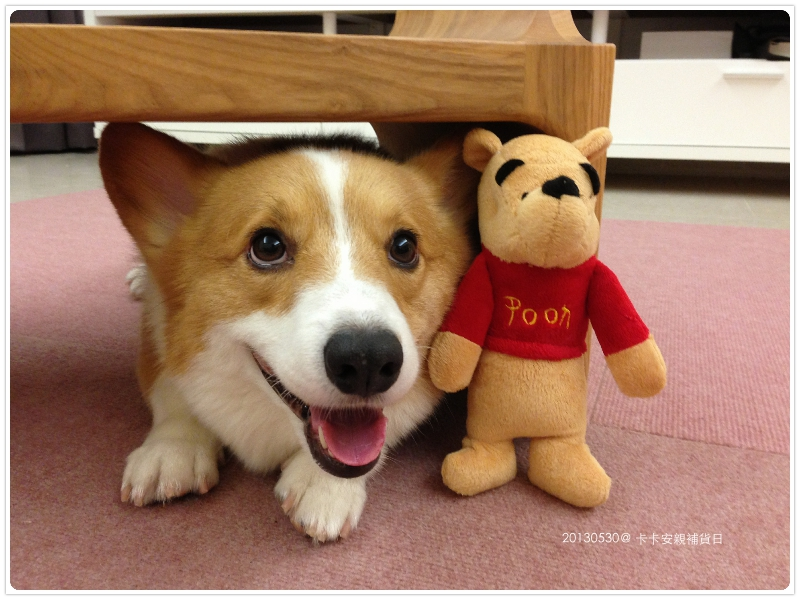
幫小鬼準備過夜包中，剛好牙膏用完拆新的，乾脆順便把牙刷也換掉
結果圖案依舊是Hello Kitty ＞／／／／／＜ （卡卡臉臭臭）
好啦！上次就買兩支便宜，下次會幫你選小汽車好不好，乖
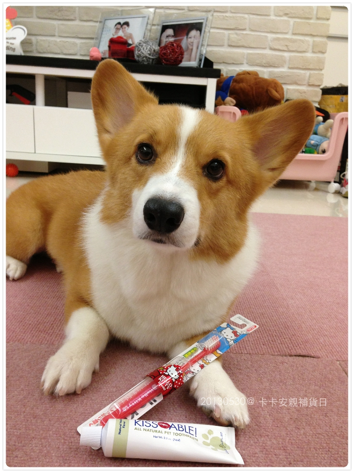
剛緊急跑去花花麻的寵物雜貨舖補個零食兒
順便也買了一個防蚤項圈 ohh~ORING 風格蚤頸圈 （附連結）
由100％無毒性及純天然香茅萃取精油製成，打開來味道非常濃厚，說明上寫可以用30～90天
今天剛開封，到時候再來看看味道何時變淡嘍！
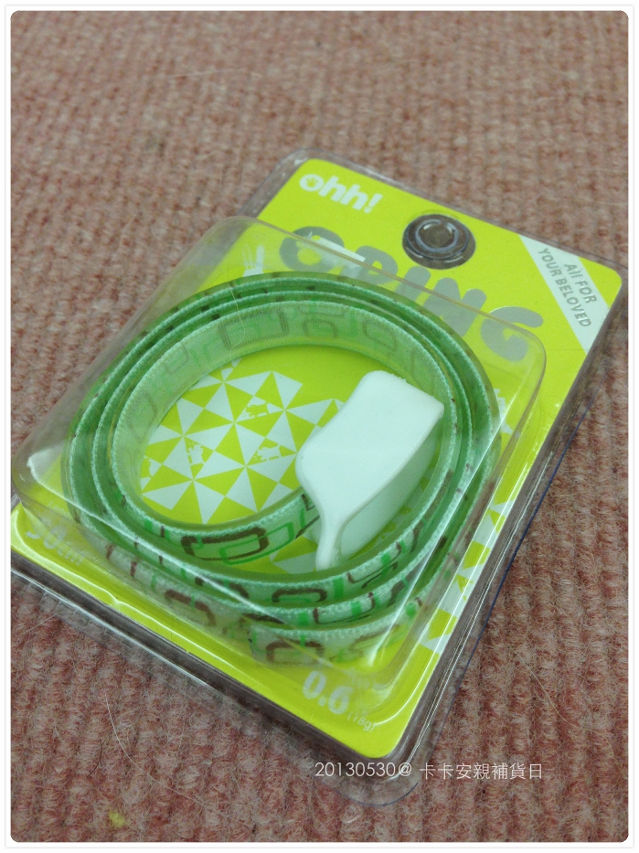
有很多顏色可選，我選了個綠色方塊，照理來說我應該會選桃紅，但夏天就想來個清新點的綠色
我自己也打算買一個掛在腳踝，蚊子看到我簡直是殺紅眼狂吸......
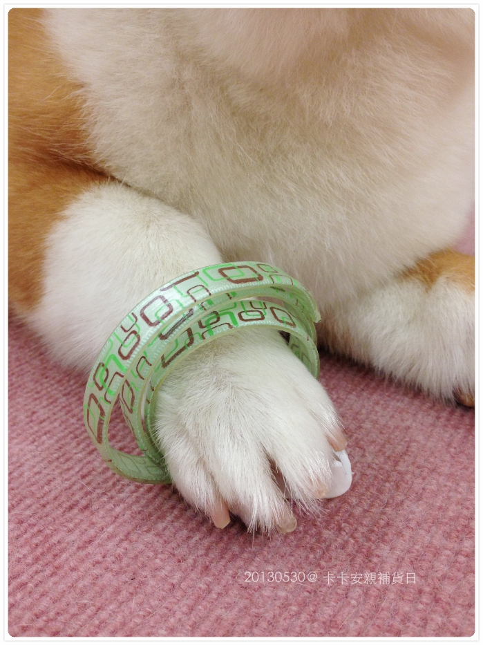
卡卡靠臉（？）吃飯，不準咬頭！！！！
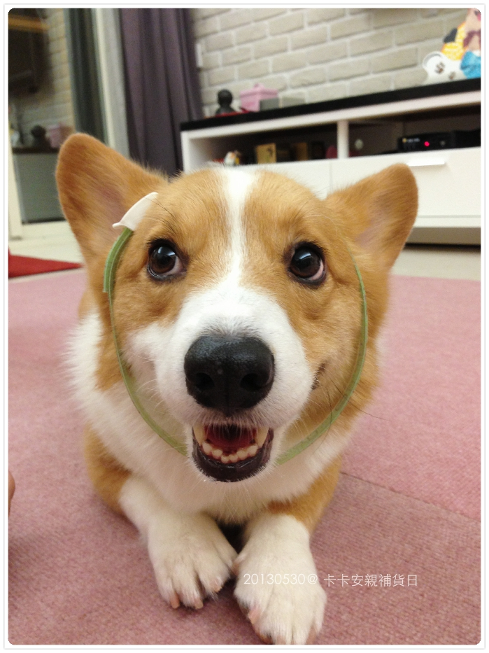
去花花麻主要是去買新鮮品質好的零食
媽媽烘了一堆肉乾都分同學吃了，忘了幫卡卡多留一些些，整個庫存都沒了，噗！！
北海道鹿肉捲 （附連結）
我剛試吃了一口，味道很香，但以人類來說吃起來很怪就是了，要熟不熟的感覺 XD
但卡卡很愛，吃了一塊之後，防蚤圈這玩意兒就隨我亂戴亂搞都沒關係了
我兒子就是這麼聽話好控制的好孩子！！棒棒 
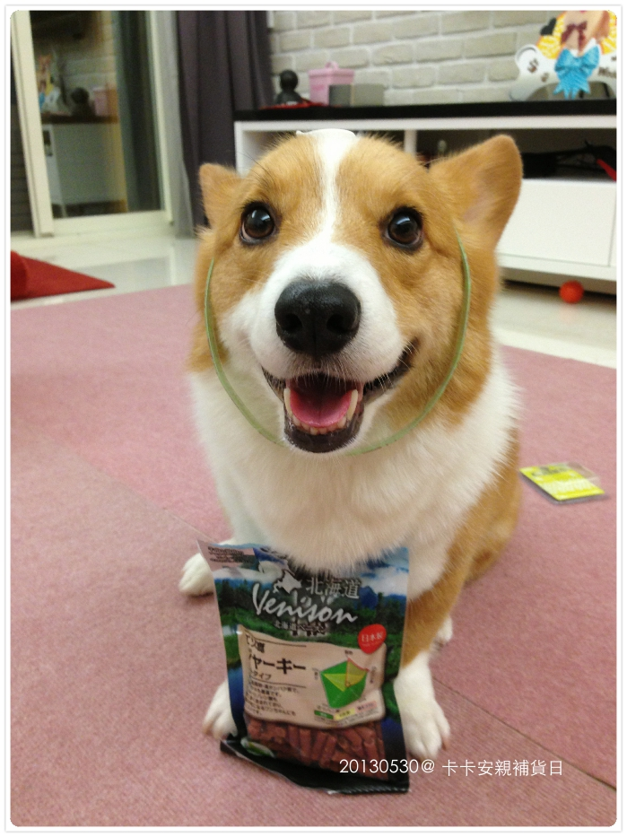
另一個口味 ADDICTION無穀雞鮮肉塊
去阿嬤家鐵定會有人亂餵食物，但至少準備他自己的零食，多少可以避免他們亂給（應該啦？）
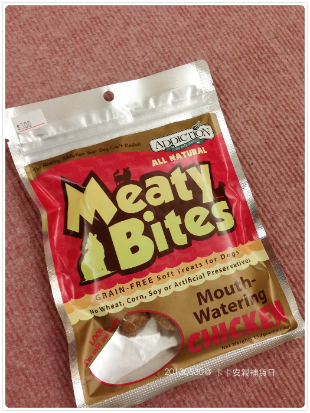
＝＝＝＝＝＝＝＝＝＝＝＝＝ 拆新玩具 猴嗨森呀 ＝＝＝＝＝＝＝＝＝＝＝＝＝
照慣例，浪跡天涯小包包一定要帶玩具，結果選了半天，全部都帶過了好膩..........
所以媽媽大發慈悲拆新玩具啦！！！oh ya ~~~~~
這是 阿達G（本來也想叫GG的，但以會有新來的G，怕錯亂，只好硬擠了個名字 XD）
Fatcat系列玩具堅軔的耐咬帆布, 並使用環保無毒塗料, 可安心的啃咬玩耍
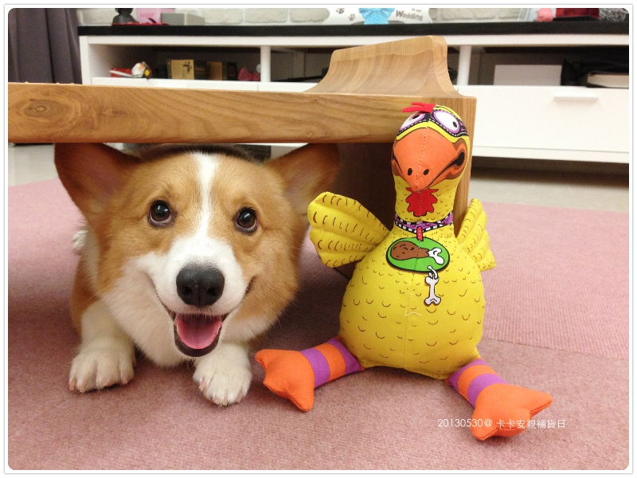
卡卡超極開心！！！！原來拆新玩具的奇蒙子這麼棒！！！！
拷～～～那些破爛玩具我真的想丟了！！哈哈哈
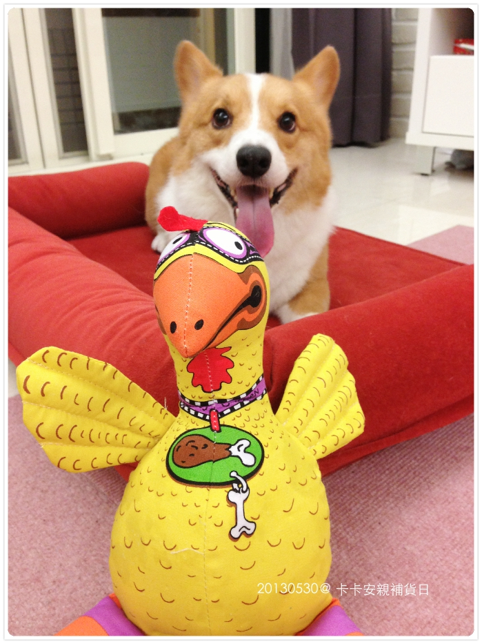
抱歉！！啊～因為這篇都是用手機拍的，所以動態的照片都糊糊的 XD

一次拆兩個新捧油來，維尼＆阿達G，大家要好好相處哦！
是說玩具籃也爆炸了，我要來選一下看是誰要被淘汱才行 
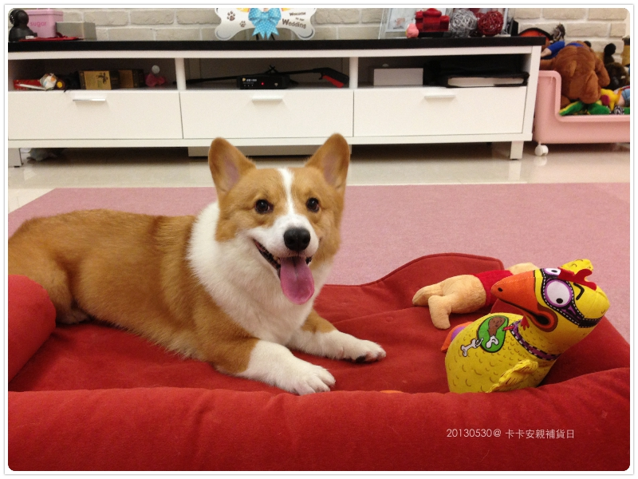
同歸於盡（？）
喂！！！！！用不著玩這麼大吧！！孩子.............
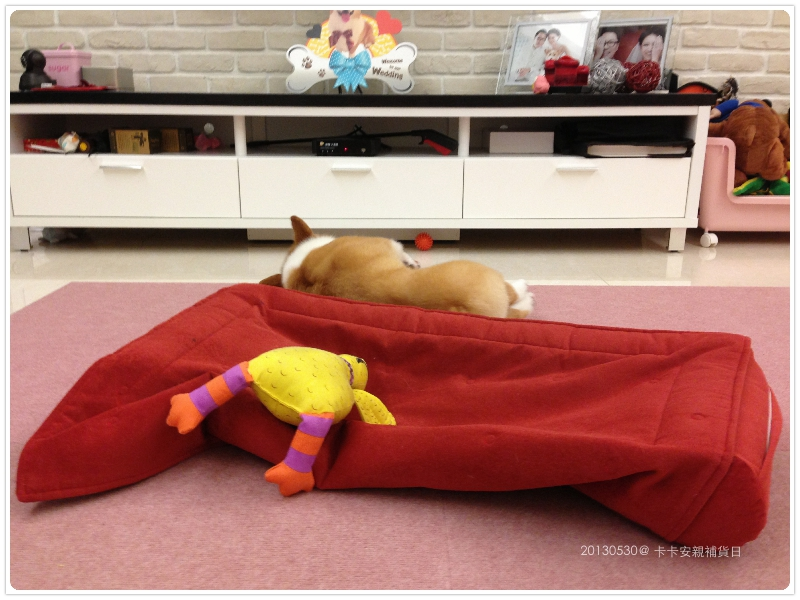
附上卡卡殺GG的影片給大家看
一直挖一直挖，根本是想活埋那隻雞嘛這小子
卡內家的床就是醬被他挖壞的！哈哈哈哈
把GG滅口後開心翻滾三圈半，然後棄屍逃亡（？） XDDDDDDD